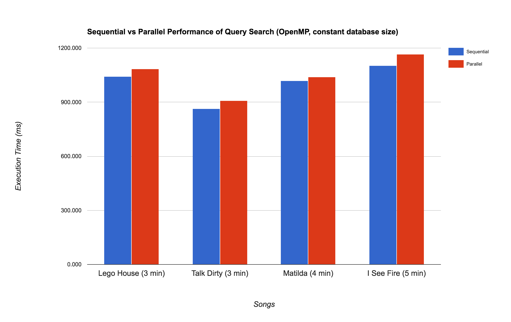

Kazam!
Parallel Audio Recognition
Final Thoughts & Results
Casey Fischer and Udaya Malik
Still Under Construction
We're still hacking away on our project and collecting results. Check back later for a more thorough writeup!
Project Summary
Kazam is a twist on the implementation of Shazam's music recognition algorithm. We implemented a rudimentary and simplified version of the audio fingerprinting algorithm to uniquely identify input audio files based on the key frequencies that occur throughout the song. We optimized our algorithm by modifying the algorithm proposed in the paper published by one of Shazam's co-founders, as well as eliminating the constraint to process captured audio in real time. Doing so allowed us to explore how much we could optimize the search process with a unique audio fingerprinting approach. We used OpenMP to attempt to speed up our algorithm on GHC Machine 45, and we analyzed performance with a variable number of threads, as well as varying sizes for our database of songs.
Background
Audio fingerprinting is a process that translates audio signals into a digital summary of the audio sample, usually by transforming the analog, continuous signal in the time domain to a digital, discrete representation of the signal in the frequency domain. If two audio samples sound the same to the human ear, then their audio fingerprints should be the same as well. Audio fingerprints are analogous to human fingerprints, in the sense that they should retain some of their unique characteristics, even in the presence of noise or distortion. Thus, by comparing the audio fingerprints of two samples, we can determine whether or not they correspond to the same original audio. However, we can't just compare the raw audio data. Just because two audio signals sound the same, doesn't mean that they'll necessarily have the same digital binary representation. This is the primary motivation behind creating audio fingerprints.
Shazam developed a clever algorithm to robustly and efficiently identify captured audio, in real time, by creating an audio fingerprint of the input audio signal, and comparing that fingerprint with the fingerprints of all the songs that comprise their massive database of music. The algorithm at a high level is rather simple: it captures a stream of audio signals, converts discrete blocks of signals from the time domain to the frequency domain, finds the most prominent frequencies that occur during that time frame, and cleverly construct hashcodes to represent where those unique frequencies occur in time. These codes are then simply searched for amongst all the codes for songs that exist in the database to find the most probable match. The Shazam algorithm uses this approach to be robust against noise and distortion, as well as to be efficient in the way they compress the audio fingerprint of the original songs.
You can see the described algorithm in the pipeline shown in the figure above. We decided to adjust the scope of the algorithm, and instead just focus on optimizing the matching of audio WAV files against our own constructed database of songs. Our algorithm takes as its input a WAV file, transforms discrete time intervals of the song into the frequency domain, and then constructs a different audio fingerprint than the audio fingerprint that Shazam uses. Since we reduced the scope of the problem to static files and eliminated the real-time restriction, we eliminated the need to implement metrics to combat noise. However, this offered us more flexibility in designing our own fingerprinting algorithm.
Here are some of the basic details of our implementation:
- Key data structures and operations:
For each block of audio, we transform its frequency data into a histogram to represent the audio fingerprint for the audio at that point in time. Normalizing the histogram gives us something similar to a probability density function, which allows us to efficiently scan over database songs to find matches.
- Inputs and outputs:
There are two phases of the algorithm: the WAV file transformation and the audio fingerprint match search.
Transforming the WAV file takes as input a WAV file and outputs our unique audio fingerprint for the audio file as a simple text file. Searching for an audio fingerprint match takes as input a database of audio fingerprints and a query audio fingerprint and outputs the song in the database that exhibits the highest percentage of similarity with the query audio fingerprint.
-
Expensive computations:
The most computationally expensive phase of the algorithm is searching the database for a match. Since there are no direct dependencies between checking a query against each individual song in the database, we can easily parallelize over each song in the database. We can also limit the time spent in the search by implementing an early break away mechanism if a particular song exhibits a high level of similarity after a set minimum time limit.
Approach
Results
Here, we present some of the results that each of our optimizations provided.
Performance of Sequential and Parallel Fingerprint Generation
In progress...
Performance of Sequential and Parallel Query Matching
We optimized the match search of an input audio fingerprint with all the fingerprints in our database by parallelizing on the axis of database fingerprints. We implemented this with OpenMP, and tested the performance with a configuration of 12 threads on GHC 45. The following chart shows a sample of songs of varying lengths, and the amount of time in milliseconds it took to compare it with every song in the database (held at a constant size of 40 songs in this case). This implementation featured no break early mechanism, so the entirety of each song was scanned and compared.
As you can see in the chart, the parallel implementation actually performs marginally worse in all cases than the sequential version. We believe this is due to the overhead of spawning threads and using them on such a small database, as well as servicing only one query, despite loading the entire database. The search process is very IO intensive, given that we have to read in each database file for comparison. We hypothesized that if we increase the database size, then we would see more benefits from the parallelized implementation over the sequential version.
 However, as the above graph shows, our prediction was incorrect. We see that as the size of the database grows, the performance of the parallel implementation is about the same or worse as the performance of the sequential version. At this point, we realized that our implementation is definitely IO bound. Even with the parallelism provided by the threads, each thread is trying to read its own database file, line by line, which generates a lot of contention for the memory bus in the system. In the single-threaded version, this problem doesn't exist because one line of one file is processed at a time.Thus, we concluded that it's impractical to load the entire database once to search for a single query. This led us to our second approach to test our implementation: loading the entire database once, servicing a series of query requests, and then analzying the amount of time it takes each implementation to find the most similar song to each query. The following graph shows the execution time of the sequential and parallel implementations of the search with a constant set of 10 queries. We see that the parallel implementation using OpenMP threads achieves approximately 3x speedup over the serial version as the size of the database increases, even with just 100 songs in the database.
Similarly, we wanted to see how does the parallel implementation scale with a variable number of threads. The following graph shows the performance of the OpenMP implementation as we vary the number of threads used by the program. The database size for this benchmarking test was 100 songs, and the number of songs we queried for was 50 songs.
We see in the figure above that generally, as we increase the number of threads spawned by OpenMP, the execution time of the parallel implementation decreases. We note two points of interest in the graph. First, the single-threaded OpenMP program has a higher execution time than just the single-threaded implementation. This result is not surprising, given that the overhead of spawning a single pthread outweighs the benefit of just sequentially searching through the database. Second, the parallel version doesn't see any performance gains beyond six threads. The GHC 45 machine has six hyper-threaded cores, so it makes sense that the optimal thread count is six (one thread per core), whereas trying to utilize both hyper-threaded execution contexts on each of the cores results in some scheduling and context-switching overhead that limits performance.
As a side note, we would have loved to have tested our implementation on a database with thousands of songs; however, our implementation is only capable of reading .WAV files, so we manually built our database of files by converting MP3 files to WAV's and running them through our fingerprinting algorithm. We didn't come up with an efficient way to generate our database, otherwise we would have scaled to a larger number of songs.
References
We did a lot of reading online about digital signal processing, but the following resources were the most helpful in developing and implementing our algorithm:
- Our course staff advisor Karima Ma and Professor Kayvon
- "An Industrial-Strength Audio Search Algorithm" by Avery Wang (2003)
- "Shazam It! Music Recognition Algorithms, Fingerprinting, and Processing" by Jovan Jovanovic
- This tech talk given by Peter Sobot, on An Industrial-Strength Audio Search Algorithm
- "How does Shazam work" on Coding-Geek (2015)
Equal work was performed by both group members.